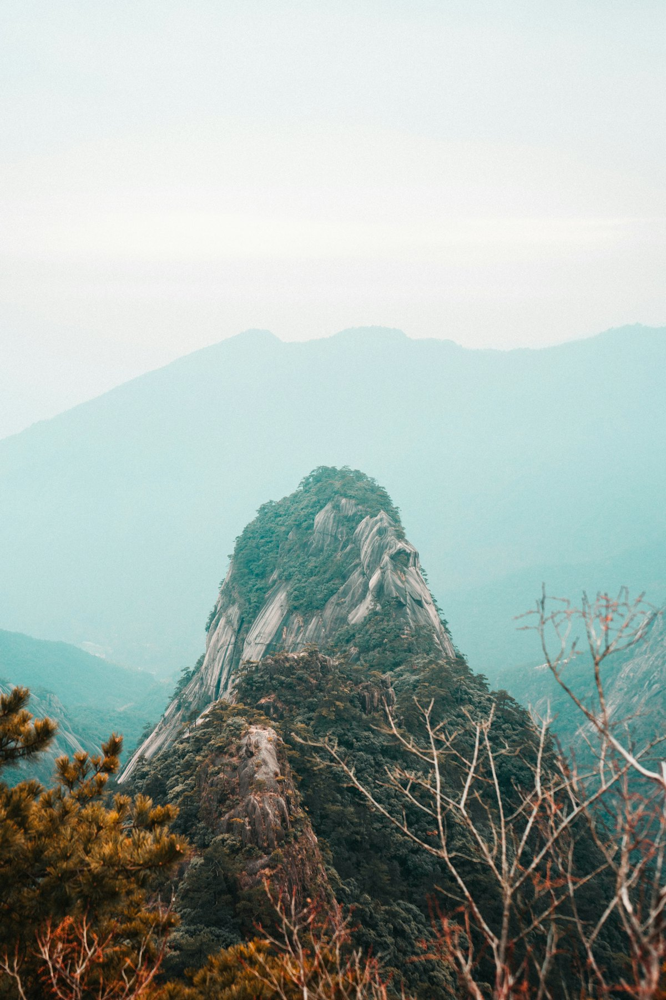
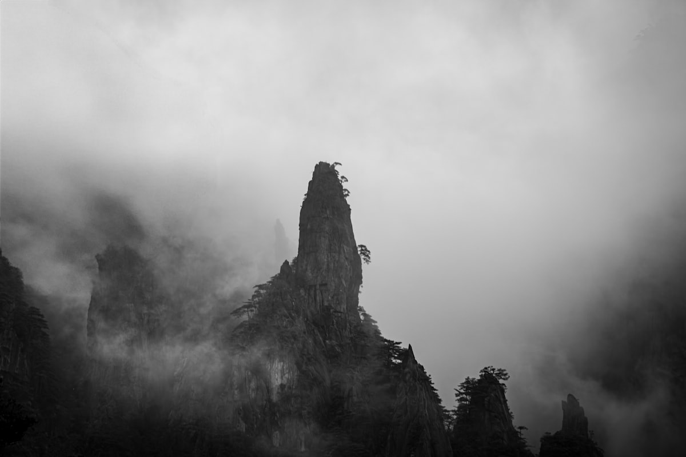
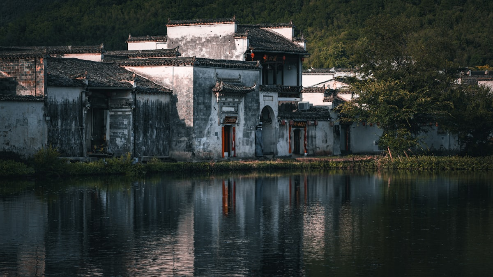
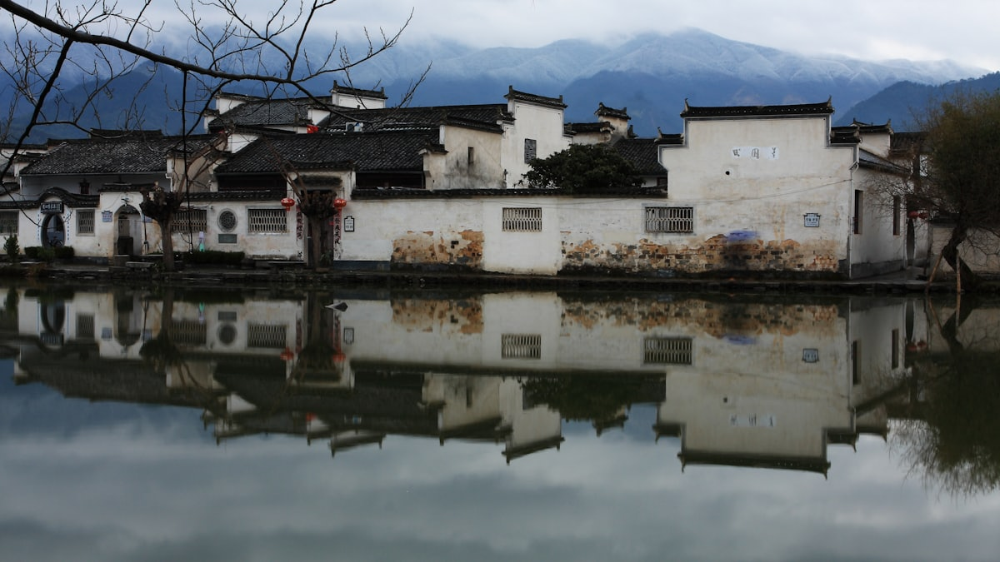
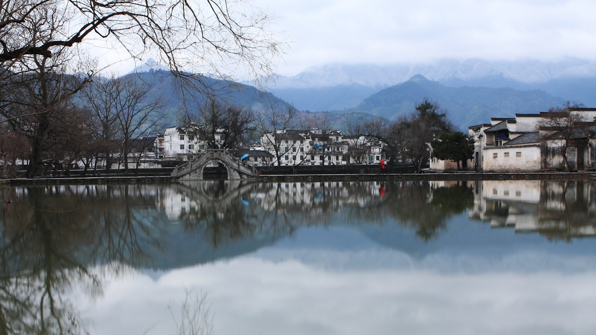
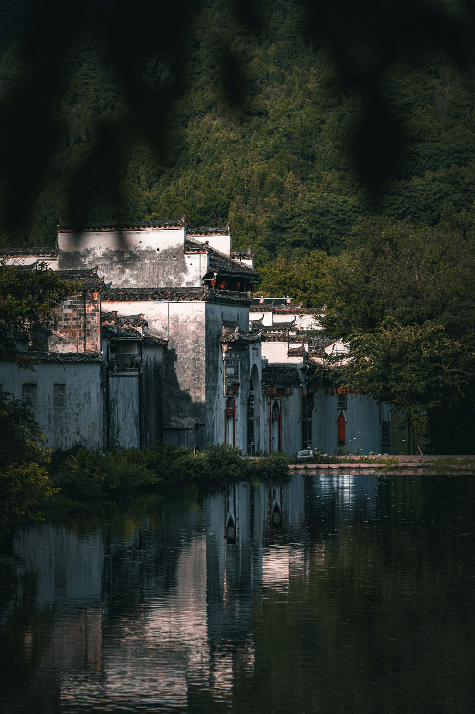

| 事项 | 结论 |
|---|---|
| 事项 | 结论 |
| 推荐方案 | 10 天 9 晚（屯溪 1 天 + 黄山 2 天 + 徽州古村 3 天 + 九华山 2 天 + 返程 2 天） |
| 返程约束 | 第 10 天下午/晚间返程 |
| 行程链 | 屯溪 → 黄山 → 宏村 → 西递 → 徽州古城 → 九华山 |
| 预算（人均） | 经济 3800–4800 ／ 标准 6000–7800 ／ 舒适 9000–12000 |
| 三件提前事 | ① 黄山山顶住宿提前 1–2 周抢（看日出必住山顶） ② 宏村/西递门票提前订 ③ 九华山缆车票提前确认 |
| 季节提醒 | 4–5 月黄山杜鹃 + 10–11 月秋色最佳；7–8 月山顶凉爽但人多，冬季雪景绝美 |
| 交通卡 | 皖南以高铁 + 景区大巴为主，古村间靠拼车/公交 |
以下为 10 天 9 晚的皖南环线推荐节奏。黄山留 2 天（山上住 1 晚），古村每天 1–2 个。
| 日期 | 行程 | 过夜地 | 主题 |
|---|---|---|---|
| D1 抵屯溪 | 抵达黄山北站，入住屯溪，傍晚屯溪老街夜景 | 屯溪 | 抵达 + 预热 |
| D2 | 黄山风景区：云谷索道上山 → 北海/西海 → 光明顶，夜宿山顶 | 黄山山顶 | 奇松云海 |
| D3 | 黄山日出 → 迎客松/玉屏索道下山 → 宏村，夜宿宏村 | 宏村 | 日出 + 古村 |
| D4 | 宏村（南湖/月沼）→ 西递（世界文化遗产） | 西递/宏村 | 徽派古村 |
| D5 | 徽州古城（歙县）：徽州府衙、许国石坊 → 渔梁坝 | 徽州古城 | 徽州府韵 |
| D6 | 呈坎古村（或唐模）→ 棠樾牌坊群 → 回屯溪 | 屯溪 | 古村牌坊 |
| D7 | 屯溪 → 池州 → 九华山，入住山下/山上 | 九华山 | 转场佛国 |
| D8 | 九华山：百岁宫 → 肉身宝殿 → 天台峰（缆车） | 九华山 | 朝山礼佛 |
| D9 | 九华山返程合肥或回屯溪：包公园/李鸿章故居（可选） | 合肥/屯溪 | 松弛收尾 |
| D10 返程 | 上午自由活动/采购，下午高铁返程 | — | 收尾 |
以下为 10 天全程的逐小时执行时间线，可当作「当天打开照着走」的清单。标注 ※ 的可选项视体力与天气取舍。
| 时间 | 事项 |
|---|---|
| 14:00–17:00 | 抵达黄山北站（高铁），打车/公交进城入住屯溪老街一带 |
| 17:30–18:30 | 办理入住 |
| 19:00–21:00 | 屯溪老街（免费）：宋明清建筑一条街，尝毛豆腐、徽墨酥、黄山烧饼 |
| 21:00 | 回酒店休息，准备明日上山 |
| 时间 | 事项 |
|---|---|
| 07:00–08:00 | 屯溪→黄山风景区南大门（汤口，约 1h），换乘景区交通车 |
| 08:30–10:30 | 云谷索道上山（参考价 80–90 元），至北海景区 |
| 10:30–14:00 | 北海 → 西海大峡谷（一环/二环，体力好者走全程） |
| 14:30–16:30 | 光明顶：黄山第二高峰，看奇峰云海 |
| 17:00–18:30 | 入住光明顶/白鹅岭山庄，看日落 |
| 19:00 | 山顶晚餐，早点休息 |
| 时间 | 事项 |
|---|---|
| 05:30–07:00 | 光明顶日出（观日平台）：云海日出是黄山名片 |
| 08:00–11:00 | 下山：迎客松 → 玉屏楼 → 玉屏索道下山（参考价 90 元） |
| 11:00–12:30 | 汤口午餐 |
| 13:00–14:00 | 汤口→宏村（大巴/拼车约 1h） |
| 14:30–17:30 | 宏村（参考价 104 元）：南湖、月沼、承志堂 |
| 18:00 | 夜宿宏村，晚餐徽菜（臭鳜鱼、毛豆腐） |
| 时间 | 事项 |
|---|---|
| 06:30–08:00 | 清晨宏村：南湖画桥、月沼倒影，晨光人少 |
| 08:30–11:30 | 宏村继续逛：承志堂、树人堂、南湖书院，或村口写生 |
| 11:30–12:30 | 宏村午餐 |
| 13:00–14:00 | 宏村→西递（约 15 分钟车程） |
| 14:00–17:30 | 西递（参考价 104 元）：胡文光牌坊、敬爱堂、古巷深深 |
| 18:00 | 夜宿西递或返宏村，晚餐 |
| 时间 | 事项 |
|---|---|
| 08:00–09:30 | 宏村/西递→歙县（约 1h 车程） |
| 09:30–13:00 | 徽州古城（参考价 100 元）：徽州府衙、许国石坊、斗山街 |
| 12:00 | 古城午餐：徽州一品锅、问政山笋 |
| 13:30–16:00 | 渔梁坝（参考价 30 元）：千年古坝、练江风光 |
| 16:30–18:00 | 古城老街散步，买徽墨、歙砚、徽州四雕 |
| 18:30 | 夜宿徽州古城，晚餐 |
| 时间 | 事项 |
|---|---|
| 08:00–09:30 | 歙县→呈坎（约 40 分钟） |
| 09:30–12:30 | 呈坎（参考价 107 元）：「游呈坎一生无坎」，八卦村布局、永兴湖 |
| 12:30–13:30 | 呈坎午餐 |
| 14:00–16:30 | 棠樾牌坊群（参考价 100 元）：七座牌坊，忠孝节义 |
| 17:00–18:30 | 返回屯溪，屯溪老街晚餐 |
| 19:00 | 夜宿屯溪，整理行李准备去九华山 |
| 时间 | 事项 |
|---|---|
| 08:00–09:30 | 黄山北站→池州站（高铁约 1.5h） |
| 10:00–12:00 | 池州→九华山游客服务中心（大巴约 1h），换景区交通车 |
| 12:30 | 九华街午餐，办理入住（九华街/半山腰） |
| 14:00–17:00 | 九华街逛：化城寺（开山祖寺）、祇园寺 |
| 18:00 | 晚餐：九华素斋 |
| 19:30 | 九华街夜色散步 |
| 时间 | 事项 |
|---|---|
| 07:00–08:00 | 早餐后出发（看日出者可 5 点起坐索道） |
| 08:00–10:30 | 百岁宫（缆车，参考价 100 元往返）：无瑕禅师肉身菩萨、百岁宫五百罗汉堂 |
| 11:00–13:00 | 肉身宝殿（月身宝殿）：金地藏肉身塔，香火最旺 |
| 13:00–14:00 | 午餐：九华素斋 |
| 14:30–17:30 | 天台峰（缆车+步行）：天台寺、「非人间」摩崖石刻 |
| 18:00 | 晚餐，休息 |
| 时间 | 事项 |
|---|---|
| 08:00–10:00 | 自由活动：九华街买开光纪念品、九华山佛茶 |
| 10:00–12:00 | 下山，池州站/返程准备 |
| 12:00–13:00 | 午餐 |
| 13:30–16:00 | 高铁赴合肥（约 1.5h，可选）：包公园（参考价 50 元）、李鸿章故居或渡江战役纪念馆 |
| 18:00 | 合肥晚餐：庐州烤鸭店/同庆楼 |
| 时间 | 事项 |
|---|---|
| 07:30–08:30 | 早餐、收拾行李并退房 |
| 08:30–11:30 | 自由活动：买徽墨歙砚、黄山毛峰/太平猴魁、徽州酥饼 |
| 11:30–12:30 | 午餐 |
| 13:00–16:00 | 赴高铁站/机场，返程 |
必去（必去）/ 顺路（顺路）/ 可跳过（可跳过）。

必去
必去
必去
可跳过
可跳过图片为 Unsplash 主题图（黄山、宏村均为皖南实景，九华山为山间古寺主题示意图），用于页面配图。更多免费景点：屯溪老街、唐模、棠樾牌坊群（收费）、渔梁坝。
点击左侧节点可在地图上定位；点击地图 marker 会高亮对应节点。坐标为 WGS-84 转 GCJ-02 纠偏后标注。
以下为单人、不含购物的估算；门票为旺季参考价，以现场为准。黄山索道、山顶住宿为最大浮动项；省外交通按高铁往返计（华东周边出发约 400–900 元），不同出发地浮动较大。
| 项目 | 经济（3800–4800） | 标准（6000–7800） | 舒适（9000–12000） |
|---|---|---|---|
| 往返交通 | 高铁约 400–800 | 高铁/飞机约 800–1400 | 飞机+接送约 1600–2500 |
| 省内交通 | 高铁/大巴 300–450 | 高铁+拼车 450–650 | 包车 800–1200 |
| 住宿（9 晚） | 青旅/农家 700–1100 | 连锁+山顶山庄 1900–2800 | 精品民宿+山顶标间 4500–6500 |
| 门票 | 基础景点约 550 | 含索道/联票约 900 | 全含+双索道约 1300 |
| 餐饮（10 天） | 650–950 | 1200–1600（含徽菜） | 2000–2600 |
| 市内交通 | 公交/拼车 150–220 | 拼车+打车 300–450 | 包车 500–800 |
带娃推荐：黄山缆车上下、山顶少走西海大峡谷；宏村西递选一村深度游；九华山可替换为齐云山（道教名山，缆车+索道轻松）；呈坎、棠樾牌坊紧凑一日。
12–2 月黄山雪景与雾凇绝美、人少，山顶住宿便宜 30–40%；但需防滑鞋与防寒装备，部分山路结冰封闭，出行前确认景区公告。
| 方式 | 时长 | 参考价 | 备注 |
|---|---|---|---|
| 高铁（推荐） | 视出发地 3–6h | 二等座 300–900 元 | 黄山北/合肥南站为皖南与全省枢纽 |
| 飞机 | 视出发地 1–2.5h | 400–1500 元 | 合肥新桥/黄山屯溪机场 |
| 自驾 | 视出发地 | 高速+停车费 | 皖南山路多弯，古村停车位少 |
| 区域 | 价格/晚 | 优点 | 短板 |
|---|---|---|---|
| 屯溪老街 | 快捷 250–400 / 民宿 400–700 | 近高铁站与老街，交通枢纽 | 离景区远（中转用） |
| 黄山山顶 | 多人间 150–300 / 标间 800–1500 | 看日出日落必住 | 床位紧张，旺季提前 2 周订 |
| 汤口（山脚） | 快捷 200–350 | 近黄山南门，性价比高 | 看日出需早起 |
| 宏村/西递 | 客栈 300–600 | 古村过夜体验，清晨拍照 | 旺季房源紧张 |
| 九华街 | 客栈 250–500 / 寺庙 100–200 | 近寺院与索道 | 山上条件一般 |